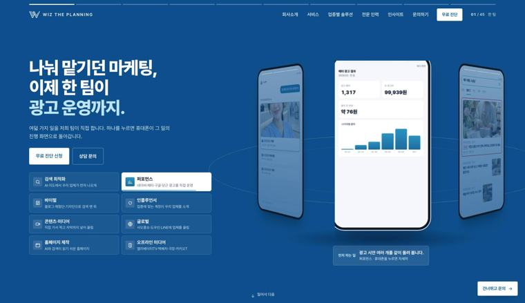
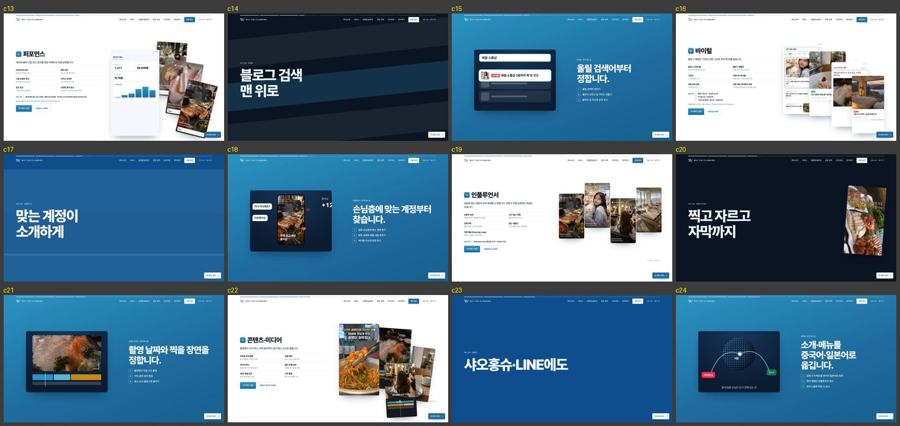
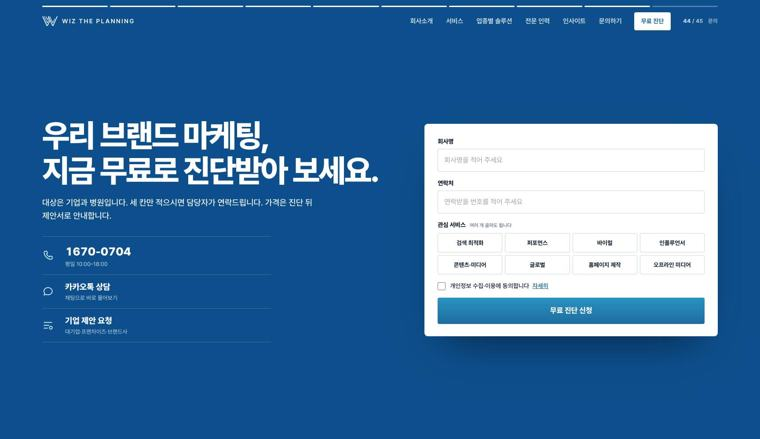

impeccable 점검에서 나온 큰 개선 세 묶음입니다. 묶음마다 정하실 것이 하나씩 있어 그림을 먼저 보여 드립니다. 작은 고장 묶음은 이미 고쳐서 미리보기에 올렸습니다.
점검 봇은 「기업·병원 대상인데 예시가 가게 쪽」이라고 했지만, 절반만 맞습니다. 홈은 매장·학원도 상담으로 받습니다(11-04 결정). 진짜 문제는 첫 화면에서 두 갈래가 안 보이고, 예시가 매장 쪽(소품샵·펜션·횟집·맛집 계정)으로 쏠린 것입니다. 대상 안내는 44번째 컷에 처음 나옵니다.

보조 문장이 「하나를 누르면 휴대폰이 그 일의 진행 화면으로 돌아갑니다」라는 조작법 설명입니다.
여덟 가지 일을 재하청 없이 저희 팀이 직접 합니다.
휴대폰 속 예시도 병원·브랜드를 앞에 둡니다. 매장 예시는 지우지 않고 뒤로 보냅니다.
| 바꿀 곳 | 지금 | 바뀐 뒤 (추천 A안) |
|---|---|---|
| 첫 화면 보조 문장 | 휴대폰 조작법 설명 | 「재하청 없이 직접」 + 두 갈래 칸 |
| 예시 화면 검색어 | 제주 애월 소품샵 · 정자동 필라테스 · 판교 치과 · 분당 피부과 | 병원·브랜드 예시를 절반 이상으로 · 소품샵은 「성수 카페」 한 장만 |
| 홈 글의 「우리 업체·동네」 10곳 | 매장 말투 | 「우리 브랜드·병원」으로 바꾸고, 매장 이야기는 로컬 업종 컷(33번)에만 |
| 엔터프라이즈 첫 사진(35번·/solutions/enterprise) | 식당 촬영 장면 | 실제 기업 리포트 화면 |
서비스 여덟 가지가 컷 셋씩, 모두 24컷이고 컷마다 화면이 멈춥니다. 관심 있는 서비스 하나만 보려 해도 24번 넘겨야 합니다.

문의 버튼 이름이 「무료 진단·무료 진단 신청·상담 문의·이 서비스 상담·우리 업종 상담·건너뛰고 문의·이 서비스 문의·기업 제안 요청」 8가지입니다. 첫 화면 「상담 문의」는 실제로 카카오톡을 엽니다. 44번 컷에서는 무료 진단과 기업 제안 요청 가운데 무엇을 골라야 할지 근거가 없고, 신청 뒤 무엇을 언제 받는지도 안 적혀 있습니다.

신청하면: [연락 시간] 안에 담당 마케터가 연락드리고, 진단표(38번 컷 모양)를 보내 드립니다.
| 버튼 | 지금 이름 | 바뀐 뒤 |
|---|---|---|
| 주 버튼(머리글·첫 화면·아래 고정 바) | 무료 진단 · 무료 진단 신청 | 「무료 진단 신청」 하나 |
| 카카오톡으로 가는 버튼 | 상담 문의 | 「카카오톡 상담」 |
| 오른쪽 아래 떠 있는 버튼 | 건너뛰고 문의 · 이 서비스 문의 | 「문의 칸으로」 |
| 새 쪽 첫 화면 버튼 | 이 서비스 상담 · 우리 업종 상담 | 「무료 진단 신청」(로컬 업종 쪽만 「상담 신청」) |